Copyright 2026 © Tren de Reserva. Todos los derechos reservados
Nosotros
Datos
Fotos
Rutas
Tren de Reserva


Galería del Grupo
Álbum de Rodadas
Pasión por la ruta y la montaña
Disfruta la libertad de rodar en combo. Descubrimos nuevas rutas, superamos cada puerto de montaña y compartimos cada kilómetro.
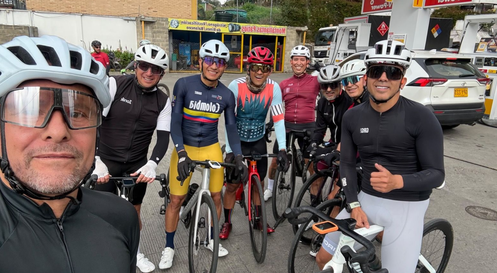
Ruta Sabana
164km
Ascensos
170km
Trocha MTB
140km
Fondo Largo
165km
Ver Fotos


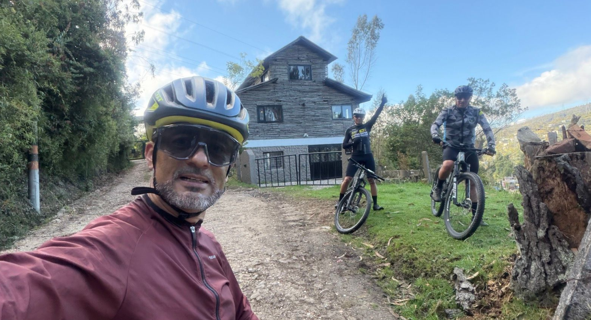
75
Cadencia promedio
25
Salidas al mes
120
Kilómetros fondo
10
Integrantes activos
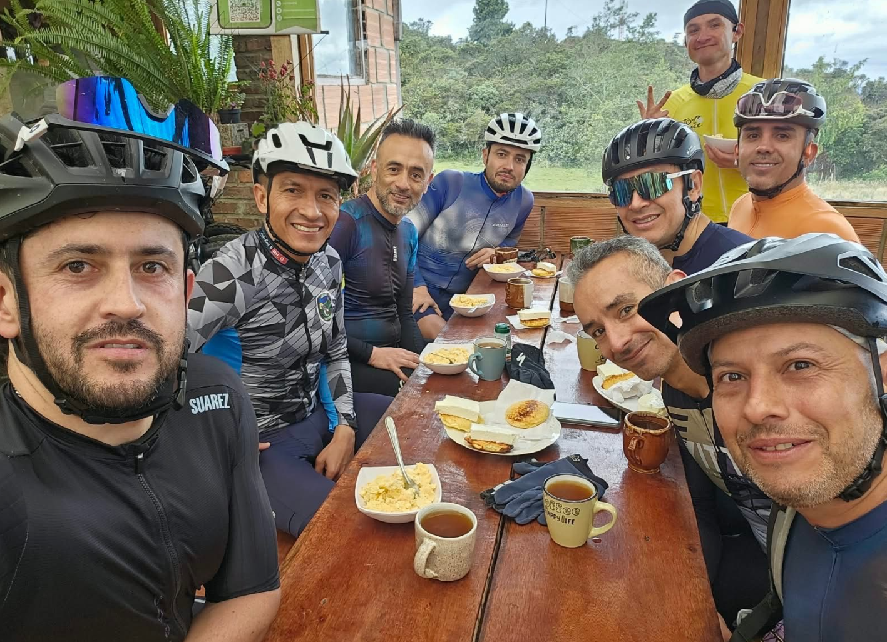
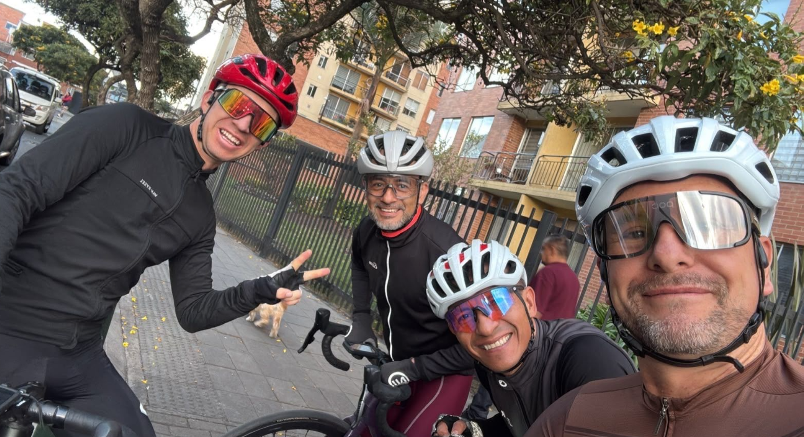
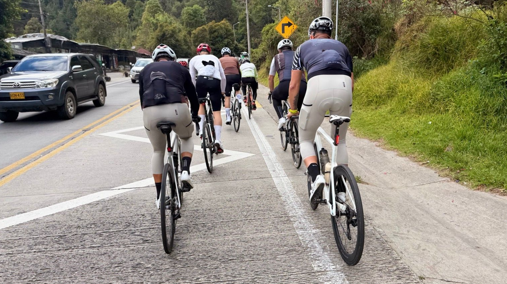

Equipamiento y Modalidades
Bicicletas
Ruta y Montaña (MTB)
Punto de Encuentro
Belisario, Verjón, Cll 80, P. Simon B. y Nacional.
Nivel del Grupo
Intermedio / Avanzado
Terreno
Asfalto y Trocha
Ver Galería

Entrenamiento en grupo
Rodar acompañado mejora tu resistencia, seguridad en carretera y motivación en cada subida.
Explore Now

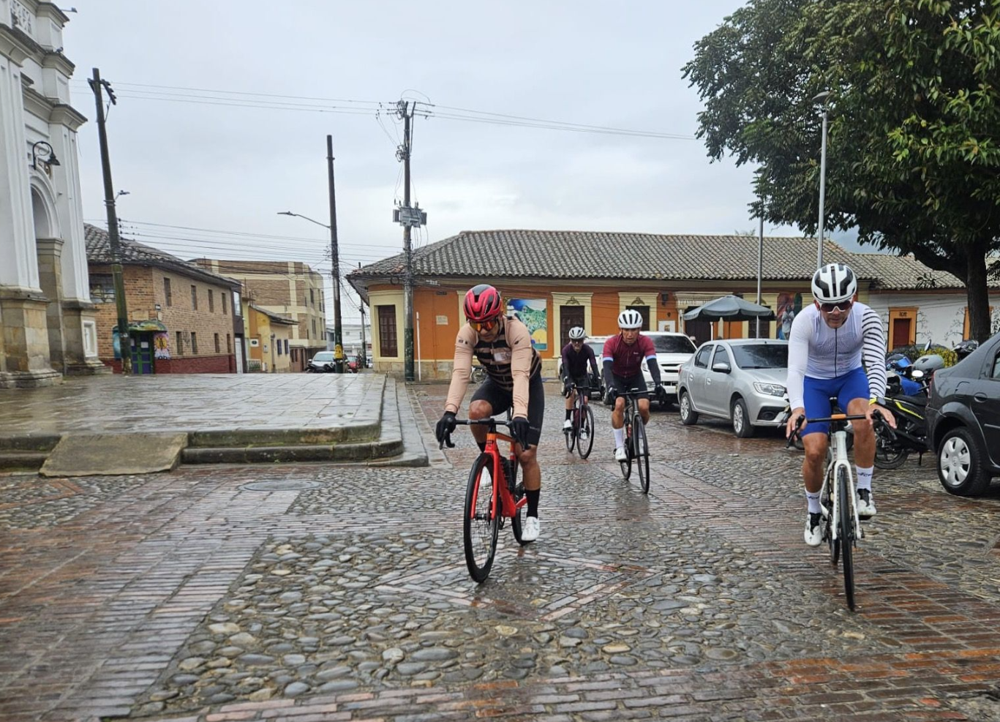
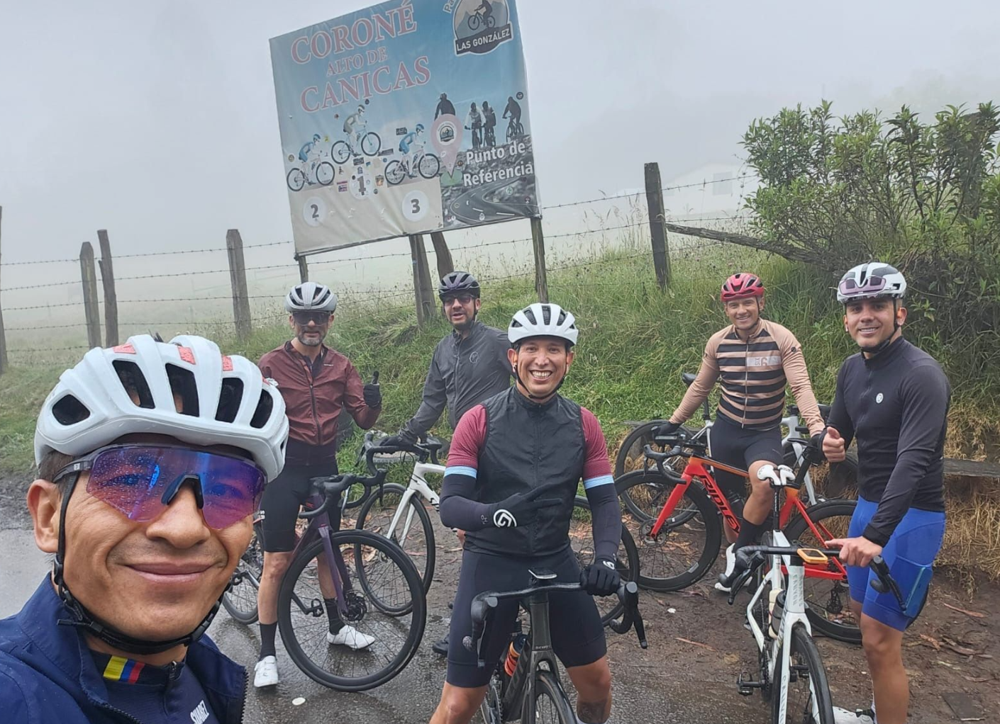
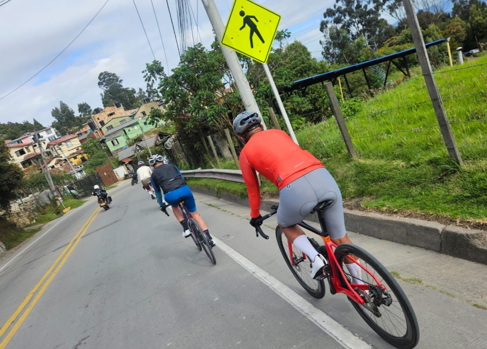
01
Planificamos rutas seguras con seguimiento GPS y apoyo total de Popocho como nuestro guia.
Nadie se queda atrás: mantenemos el espíritu de compañerismo de principio a fin, Jorge siempre nos espera y reune al grupo en cada parada.
02
Registramos cada salida con fotografías para compartir los mejores momentos de Tren de Reserva.
03
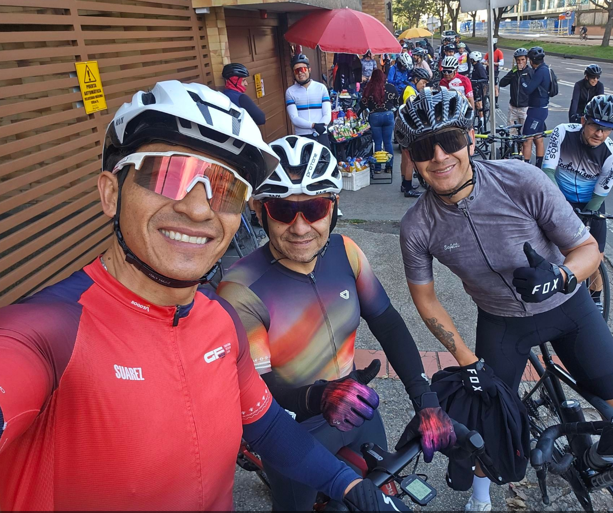
Una gran rodada cada vez
Nuestro grupo reúne ciclistas apasionados por el deporte, la disciplina y la amistad sobre dos ruedas.
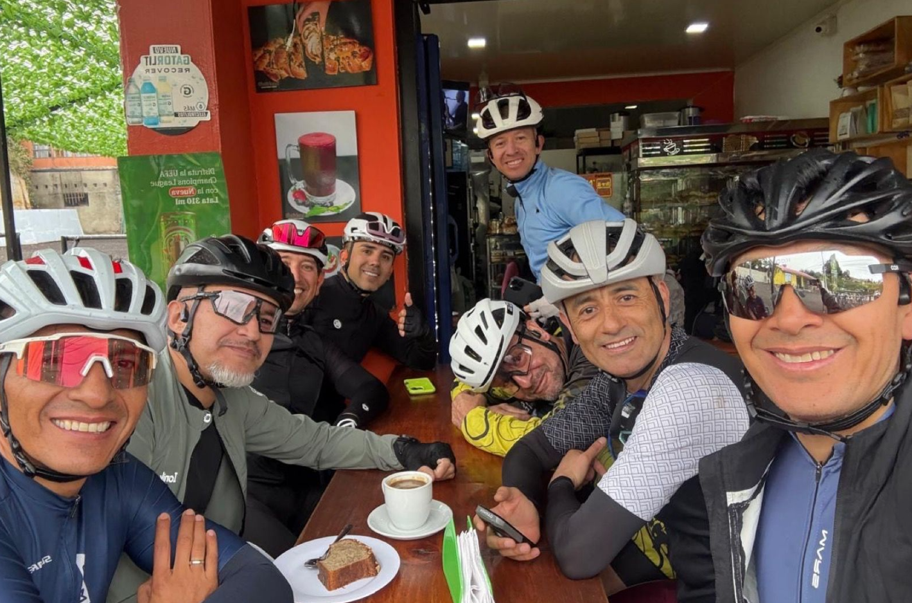
Velocidad
43Kph
Distancia
120Km
Desnivel
1800m
Galería · Desliza
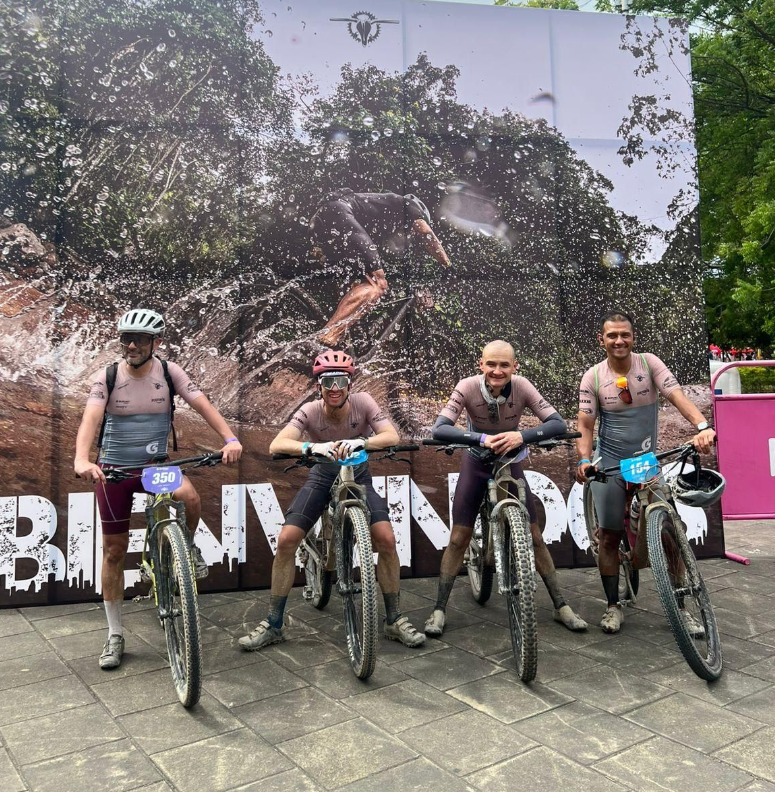
Tren de Reserva
Rodadas de ruta y montaña. Explorar nuestras fotos del grupo.
01 - 29
APASIONADOS POR EL CICLISMO
¡Bienvenidos! Aquí compartimos nuestras rutas, fotos y experiencias de cada rodada.
Explore Now

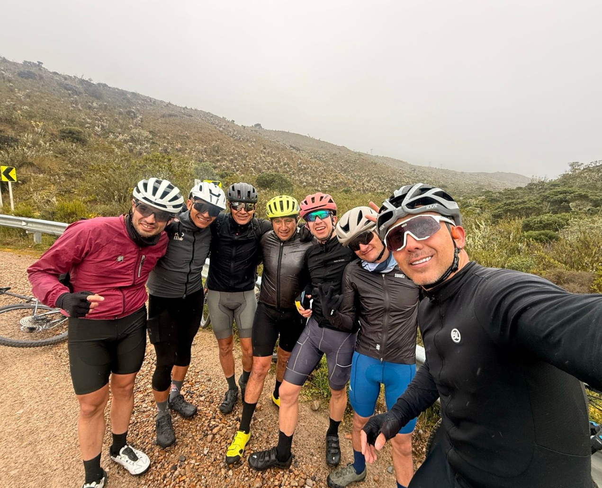

TREN DE
RESERVA